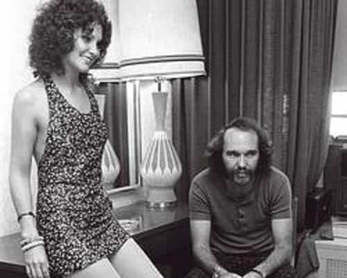

Deep Throat (1972) was the first “blue movie” to become a major blockbuster. This film—and Supreme Court decisions tinkering with the legal definition of obscenity—became a game changer for the porn industry. Because of its considerable cultural significance, the story deserves (if you’ll pardon the expression) a deep dive.
Get thee to a nunnery
Linda Boreman (stage name Lovelace) grew up in NYC, moving to Florida with her family at sixteen. Per the Daily Mail:
At high school they called her ‘Miss Holy Holy’ because she wanted to become a nun and always kept the boys at arm’s length.
However, her path didn’t exactly lead to a convent. She had a baby out of wedlock, who was put up for adoption. Her parents were pretty strict. The 2013 Lovelace film biography showed her mother slapping her for returning very late after a hot date.
Becoming the first big porn star might be considered the ultimate “Fuck you, Dad” moment. However, the reason wasn’t more rebellion, but rather her future husband, Chuck Traynor. Although Lovelace depicts her parents as “squares”, ultimately they were right about this topless bar owner, among other things.
A hell of a way to become famous

The happy couple in 1970. No, that’s not Charles Manson.
Under Traynor’s influence—what form that took is hotly disputed—she began acting in porn. Beginning in 1969, she starred in four known 8mm loops. The material is a little too exotic even for today’s mainstream porn (such as it is). She denied making them until the proof came to light. Besides that, the less said about these early productions, the better.
The big breakout was 1972’s Deep Throat. Unlike the typical porn of the time, this one actually had a plot. The premise is that her clitoris was in her throat—pretty silly, but it worked. The June 5 issue of Screw described it:
Lovelace, wrote Mr. Goldstein, “is almost a Ripley’s Believe-It-Or-Not as she takes the whole joint down her gullet. No, it’s not a small-potato penis but a roustabout rod of ten inches that plummets into the deepest recesses of our lady’s oral cavity. It seems a miracle. […] I was never so moved by any theatrical performance since stuttering through my own bar mitzvah.”
Apparently the movie itself doesn’t suck.
What’s truly remarkable is that it brought porn to new heights of respectability, for lack of better words. This one was shown not in little arcades with a slot for quarters and a hole in the wall, but on big screens. Millions saw it—even prominent celebrities—not just dudes in long raincoats haunting Times Square. It became the subject of late night comedy shows, and even was the codename for the Watergate informer.
After that, Confessions of Linda Lovelace appeared in 1973. Deep Throat 2 was released in 1974, but she refused a sex role as she began having second thoughts. Traynor forcing her into prostitution likely spurred along this decision. She had become the first major porn star, but certainly not the last one chewed up and spat out by the experience.
After Traynor
Soon they separated. Eventually she turned on Traynor and the pornographic industry with Ordeal (1980) and Out Of Bondage (1986), contrasting with two 1974 pro-porn memoirs. (Writing two more autobiographies than Obama is no mean feat.) The particulars have been disputed.
I’ll admit that I’ve never seen Deep Throat. However, accounts from the crew on that film (and other ones) indicate that the narrative in Ordeal was somewhat true, somewhat exaggerated. They note that there were bruises on her leg, and describe big fights off the set. Traynor himself admitted beating her, and this worm considered himself justified.
Even so, on the set, they say she seemed happy and under no duress. If there were a gun to her head (as she alleged), likely the degree of method-acting to maintain composure would’ve been impossible. Hugh Hefner himself met her and later said she seemed pretty enthusiastic. (I’ll leave out the specifics.)
Is it plausible that she became enthralled with a wretched knucklehead hooked on cocaine, controlling and insanely jealous even while pimping her out? Absolutely! Greasy charm alternating with smacky-face is an extremely effective Push-Pull strategy, though I certainly don’t recommend it. The sad truth is that many women—particularly with low self-esteem and family troubles—just eat up that bullshit like candy. Witnessing loser appeal is quite infuriating for any decent guy who works productively, treats women like proper ladies, and doesn’t commit crimes. For many guys who’ve done everything right according to society, that’s their first Red Pill, and the bitterest.
According to Linda’s later accounts, she wanted to leave for years. This seems implausible. Stockholm Syndrome cases can’t get enough of it, until one too many black eyes finally clues them into the utter irrationality. Apparently it’s all fun and games until things get real. Likely her own drug use was a contributing factor too. I’ll give her credit for wising up; everyone makes mistakes. Still, repentance is best when it includes fully acknowledging one’s role.
The 2013 biopic ends with Linda reconciling with her parents, together with her new husband and their children. She finally found happiness as a proper wife and mother. Things were surely orders of magnitude better than before, but didn’t go perfectly—they divorced in 1996.
The feminist connection

Andrea Dworkin, feminist and cheeseburger addict
After being the Sexual Revolution’s poster child, later she championed the 1980s anti-pornography cause. This brought her into the orbit of Gloria Steinem and other feminists. However, she became disenchanted. Per The Other Hollywood:
Between Andrea Dworkin and Kitty MacKinnon, they’ve written so many books, and they mention my name and all that, but financially they’ve never helped me out. When I showed up with them for speaking engagements, I’d always get five hundred dollars or so. But I know they made a few bucks off me, just like everybody else.
Even so, although I really hate to agree with feminists about anything, they’re partially right. The “adult entertainment” industry was—and remains—pretty grubby. For this reason, I turned down a job supporting porn sites, although I desperately needed the money then. The business associate (shall we say) of one of my former girlfriends—it’s a long story—hit me up. However, I told this lady that it led to nowhere for the performers, and I couldn’t participate. That hurt her feelings, though it wasn’t my intention.
The aftermath of Deep Throat

This low-budget effort, a week-long shoot costing $22.5K, had the best return-on-investment ratio of any movie. Gross revenue was perhaps $100 million, though six times higher by another estimate. That was much more back then, thanks to politicians repeatedly swiping the unlimited Federal Reserve credit card. The lower figure is half a billion today, after adjusting for the inflation tax.
The New York Mafia, which financed and distributed it, screwed the actual producer out of his third of the profits. (Did I mention that the porn industry is grubby?) Linda herself earned merely $1250 for the acting role. However, this measly sum probably went straight up Chuck’s nose.
This film launched the so-called “Golden Age of porn”, starting an avalanche. The grainy 8mm loops in “24 hour news stands” became unfashionable. Soon, big-screen X-rated theaters littered bad neighborhoods everywhere. During the 1980s, VHS tapes became available for rental. However, the Internet enabled pornography’s critical mass, with millions of zombies fapping for hours over weird crap. It’s been a long race to the bottom since the 1970s. Today, skin flicks with plots that featured normal looking people doing fairly ordinary bedroom stuff probably wouldn’t sell.
Ultimately, Deep Throat—and the Burger Court’s decisions—paved the way for one enriching facet of the New, Improved America. Pornographers became “champions of the First Amendment”, in the way that Mafiosos are champions of the Fifth Amendment. Beyond what the feminists described, there are many other reasons why that was a wrong turn, but all that’s another story.
Read More: Is This Pornstar A True Friend Of Feminism?